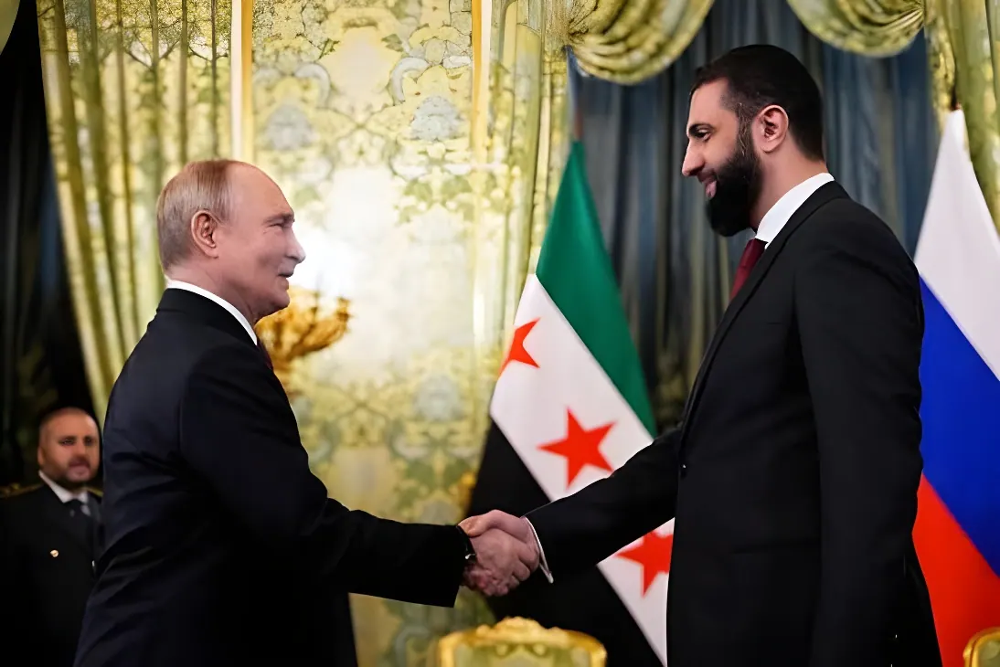

Le 9 août 2026, Damas annonce avoir conclu avec Moscou un protocole d'accord sur l'avenir de ses deux bases militaires russes, héritées de l'ère Assad. Après dix-huit mois de négociations discrètes entre le Kremlin et le nouveau pouvoir syrien d'Ahmad al-Charaa, les installations militaires seront transformées en « centres conjoints de formation », tandis que Damas récupère le contrôle des infrastructures civiles. Un compromis qui permet à la Russie de sauver son unique point d'appui naval en Méditerranée orientale, et à la nouvelle Syrie de convertir un héritage encombrant en levier diplomatique.
Dimanche 9 août 2026, le ministère syrien des Affaires étrangères annonce, via l'agence officielle SANA, la conclusion d'un protocole d'accord avec la Russie sur l'avenir de ses deux bases militaires sur la côte méditerranéenne syrienne : la base aérienne de Hmeimim et la base navale de Tartous. Le texte, fruit d'un an et demi de négociations intensives, prévoit que les installations à caractère militaire soient transformées en « centres conjoints d'entraînement et de formation », dans le cadre de « nouveaux arrangements préservant les intérêts mutuels » des deux pays. Un délai de trois mois est fixé pour achever le processus de transfert.
Parallèlement, les installations civiles adjacentes aux deux sites — notamment l'aéroport de Lattaquié, lié à Hmeimim, et le quatrième quai commercial du port de Tartous — repassent sous administration syrienne, ouvrant la voie à leur intégration progressive dans l'économie civile du pays. Le ministre syrien des Affaires étrangères par intérim, Assaad al-Chaibani, s'est rendu dès le dimanche sur le site de Tartous pour inspecter les installations concernées par l'accord, qualifié d'« historique » par SANA.
Les deux installations ont une histoire bien distincte. Tartous remonte à 1971, année où Moscou obtient de Damas un « point d'appui matériel et technique » pour garantir à sa flotte un accès aux mers chaudes, en cas de fermeture par la Turquie — membre de l'OTAN — des détroits du Bosphore et des Dardanelles. Cet accord soviétique survit à l'implosion de l'URSS. Hmeimim, en revanche, est construite en 2015, à proximité de l'aéroport international de Lattaquié, pour servir de centre stratégique à l'intervention militaire russe aux côtés de Bachar al-Assad dans la guerre civile syrienne. Les deux bases constituent alors les seuls avant-postes militaires officiels de la Russie en dehors de l'ex-URSS, et jouent un rôle déterminant dans le maintien au pouvoir d'Assad jusqu'à sa chute, en décembre 2024.
La fuite de Bachar al-Assad vers la Russie, en décembre 2024, plonge l'avenir des deux bases dans l'incertitude. Le nouveau pouvoir syrien, dirigé par Ahmad al-Charaa, maintient dans un premier temps des relations prudentes avec Moscou et garantit la sécurité des installations russes, tout en annulant, début 2025, un contrat confiant à la Russie la gestion du port de Tartous. Al-Charaa effectue depuis deux visites à Moscou, où Vladimir Poutine l'a reçu à deux reprises — un geste d'autant plus notable que la Russie continue d'héberger Assad, dont Damas réclame l'extradition.
Pour la nouvelle Syrie, sortie de plus de treize ans de guerre civile et engagée dans une normalisation internationale accélérée depuis la levée des sanctions occidentales, traiter avec une puissance nucléaire membre permanent du Conseil de sécurité de l'ONU consolide sa légitimité tout en évitant un contentieux ouvert avec Moscou. Pour la Russie, en revanche, l'enjeu est vital : Tartous demeure son unique base navale de réparation et de ravitaillement en Méditerranée, et Hmeimim son point d'appui logistique pour projeter ses forces et ses sociétés militaires privées vers l'Afrique.
« Nous considérons la signature, le 9 août, du mémorandum entre la Fédération de Russie et la République arabe syrienne comme une étape importante visant à approfondir notre coopération bilatérale dans le domaine militaire. »
— Ministère russe des Affaires étrangères, 11 août 2026| Acteur | Position officielle | Intérêt réel |
|---|---|---|
| Russie | Renforcement des liens bilatéraux | Préserver son unique accès naval en Méditerranée et son hub vers l'Afrique |
| Syrie (al-Charaa) | Accord « historique », intérêts mutuels | Gagner en légitimité internationale et récupérer des infrastructures civiles |
| Turquie | Silence officiel | Surveiller une présence russe durable face à ses propres ambitions en Syrie |
| États-Unis | Pas de réaction officielle immédiate | Éviter de compliquer la normalisation en cours avec Damas |
Si les autorités syriennes n'ont donné aucun détail public sur le contenu opérationnel de la réorganisation annoncée, une source syrienne proche du dossier a indiqué à l'agence Reuters que des militaires russes continueraient d'être stationnés dans les nouveaux « centres d'entraînement », sans préciser leur nombre. Une clarification qui nuance la présentation d'un simple retrait déguisé : la présence militaire russe se maintient, sous une appellation nouvelle et un format présenté comme davantage coopératif.
L'accord du 9 août ne marque pas le retrait de la Russie de Syrie, mais sa reconfiguration. En rebaptisant ses bases militaires « centres conjoints de formation » tout en y maintenant des troupes, Moscou préserve l'essentiel de ce qui lui importe : un point d'ancrage méditerranéen et un couloir vers l'Afrique, hérités de plus d'un demi-siècle de présence à Tartous. Pour Damas, l'accord illustre une diplomatie d'équilibriste : ménager une puissance encombrante mais utile, sans pour autant renoncer à récupérer la souveraineté sur les infrastructures civiles du littoral. Reste à savoir si ce compromis, scellé alors que la Turquie et les États-Unis redessinent également leur influence en Syrie, résistera aux pressions concurrentes qui s'exercent sur la nouvelle Damas.